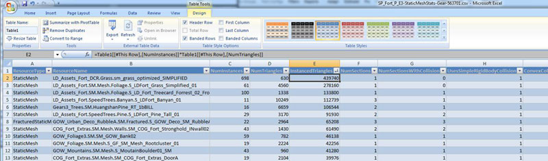
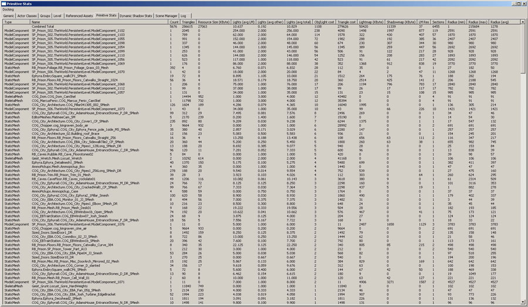
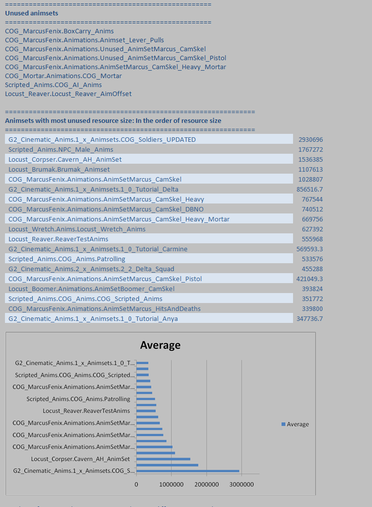

UDN
Search public documentation:
ContentProfilingHomeJP
English Translation
中国翻译
한국어
Interested in the Unreal Engine?
Visit the Unreal Technology site.
Looking for jobs and company info?
Check out the Epic games site.
Questions about support via UDN?
Contact the UDN Staff
中国翻译
한국어
Interested in the Unreal Engine?
Visit the Unreal Technology site.
Looking for jobs and company info?
Check out the Epic games site.
Questions about support via UDN?
Contact the UDN Staff
UE3 ホーム > パフォーマンス、プロファイリング、最適化 > コンテンツのプロファイリングと最適化
コンテンツのプロファイリングと最適化
概要
プロファイリングと最適化の例
「Gears of War 3」のためのガイド付きコンテンツ最適化
「Gears of War 3」で採用されているコンテンツ最適化のプロセスは、 イーストコースト ゲーム カンファランス で紹介されています。このプレゼンテーションのためのスライドは、 ここ から入手できます。「Gears of War 2」のためのコンテンツ最適化ワークフロー
- QA がゲーム全体をプレイしながら、GPU の処理時間が 33ms を超える場合に PIX GPU キャプチャを取ることによって、ユニークなシナリオをキャプチャしようとします。(同一エリアでキャプチャ 10 個にはなりません)。
- プログラマーが GPU キャプチャに目を通します。
- 視覚上の影響が少ない、遅いケースを特定します。
- 実装された場合に当該シーンが 33ms 未満になるような潜在的最適化を発見するのが理想となります。
- 詳細な描画イベント情報を使用することによって、エディタ内において各描画コールがどれであるかを識別します。
- アクタ名、リソース名 (静的メッシュ、パーティクルエミッタなど)、マテリアル名を記録します。
- 明確な指示とスクリーンショットを伴って、どこを変更すべきかをレベルデザイナーに知らせます。
- レベルデザイナーとアーティストが、どの最適化が意味あるものかを決定し、コンテンツの変更を実施します。
- これによって、アートがクオリティの判断に関与することが保証されます。
- 必要に応じて上記ステップ 1～3 を繰り返します。
一般的なコマンドレット
参照コンテンツの分析
コストパフォーマンス上最善のものに取り組んでいることを確認するには、マップが何を参照しているのか必ず知る必要があります。さらに、ゲーム全体でかかる最適化の時間という観点からコストパフォーマンスについて理解することも、極めて重要です! 経時的変化を知ることも非常に大切です。また、Excel を使用して派生的なスプレッドシートを作成し、データを簡単に回覧することも必須です。 AnalyzeReferencedContentCommandlet からの出力が、これを実行します! 使用法 このコマンドレットを使用するには、以下を実行するだけです。ゲーム名 AnalyzeReferencedContentCommandlet マップ名
GAMENAME AnalyzeReferencedContentCommandlet MAPNAMES
これによって、マップのコンテントについて作成されている .csv ファイルの数が算出されます。これは、マップ単位ベースと、グローバルベース両方で算出されます。
そこから、データを調べ、外れ値および最も負荷が大きいオブジェクト、最もよく使用されるオブジェクトを知り、それらを最適化しなければなりません。
例
- StaticMesh .csv を確認し、1 度か 2 度しか使用されていない静的メッシュを探します。それらのメッシュがヒーローにかかわるピースでなければ、通常は、影響を受けることなく、レベルから取り除くか、影響がない他のもっとよく使用されるオブジェクトに置き換えることができます。それらは、ビジュアル上レベルに斬新さをもたらすために配置されているのですが、レベル全体から見ると必要なものではありません。（特に、コスト上の理由で）
- StaticMesh .csv を確認し、最もメモリを使用するオブジェクトを見つけます。どのくらい使用されていますか? そのオブジェクトを最適化できますか?
-
summary .csv を確認することで、ゲーム全体でインスタンス化されたトライアングルの総数を計算することができます。その方法は次のようになります。NumInstances (インスタンス数) の列に NumTriangles (トライアングル数) の列を掛け合わせ、その結果を、特定の StaticMesh のための InstancedTriangles (インスタンス化されたトライアングル) という名前の新たな列に入れます。 InstancedTriangles の列をソートすると、ゲーム全体で最も多くトライアングルを使うメッシュが分かります。それらを最適化すれば、最適化のコストに比して最大の結果が得られます。（たとえば、低木は、ほとんどどのレベルでも、いたるところで使用されています。これを最適化すると、極めて高コストのフェンスメッシュを最適化するよりも、はるかに大きな価値が得られます。これは、フェンスメッシュが、少数のレベルでしか使用されていないことによります。
(フルサイズで見るためには、クリックしてください。)

- SoundNodeWaves .csv を確認することで、SoundNodeWaves のサイズでソートをかけることができ、他よりも 4 倍も負荷がかかっている環境音を見つけることができます。なぜ、これほど負荷が大きいのか調べる必要があります。
- SoundNodeWaves .csvを確認すると、10 個の BirdCall SoundNodeWaves が参照されていることが分かります。おそらく、種類を減らしても、違いは分からないはずです。
Content Audit (コンテンツ監査)
Content Audit (コンテンツ監査) コマンドレットは、ゲーム内でアクティブに使用されているコンテンツを分析するとともに、事前に決定されているルールセットに基づいて、「疑わしい」と思われるアセットを見つけます。これらのルールを指定することによって、次のようなことを確実に実行することができます。すなわち、コンテンツを効率的に使用すること、必ずセットされなければならないコンテンツアイテムのプロパティをセットすることなどです。 コンテンツ監査コマンド のページでは、コマンドレットの使用法全体についてより詳しく説明しています。Content Comparison (コンテンツの比較)
Content Audit (コンテンツ監査) コマンドレットは、ゲーム内でアクティブに使用されているコンテンツを分析するとともに、同様なタイプまたはクラスのアセットどうしを比較します。このコマンドレットによって、使用されているアセットの中から、そのアセットのタイプが本来必要とするコストを大きく上回るコストをもつアセットをなくすことができます。 このコマンドラインの使用法の詳細については、 Content Comaprison コマンドレット のページを参照してください。Fixup Redirects (リダイレクトの修正)
Fixup Redirects (リダイレクトの修正) コマンドレットは、すべてのパッケージをイタレートすることによって、あらゆる参照が、実際のアセットを直接指し、他のパッケージのリダイレクタを指さないようにするためのものです。これによって、コンテンツが使用されていない場合およびロードされてはならない場合に、ロードされることを防ぐことができます。 このコマンドレットを使用してコンテンツの参照を常にクリーンアップされた状態に保つには、 コマンドレット転送の修正 のページを参照してください。一般的なブラウザとツール
Primitive Stats Browser (プリミティブ統計ブラウザ)
Primitive Stats Browser (プリミティブ統計ブラウザ) は、レベルで使用されているジオメトリのアセットについて詳細な分析を示します。それによって、アートチームがどのアセットを削除または改変する必要があるかということを、デザイナーが決定することができるようになります。 以下は、Primitive Stats Browser (元の Static Mesh Stats Browser (静的メッシュ統計ブラウザ)) のコラムに関する解説です。- Type - リソースの種類です。骨格メッシュ、静的メッシュ、テレイン (地形)、BSP (モデル) のいずれかになります。
- Count - レベル内にある当該メッシュのインスタンス数です。
- Triangles - インスタンス 1 個あたりのトライアングル数です。
- Resource Size - view resource usage (リソース使用の表示) によってレポートされるリソースのサイズです (単位はキロバイト)。静的メッシュおよび骨格メッシュに関するものに限られます。
- Lights (avg LM/ other/ total) - ライトマップライト (LM)、および、非ライトマップライト (other)、各インスタンスに影響を与えるトータルのライトの平均数です。
- Obj/ Light cost - オブジェクト / ライトのインタラクション コストです。この数値は、当該の静的メッシュが光源処理のために何回再レンダリングされるかを示します。これは、すべてのインスタンスの総セクション数を、非ライトマップライト数倍したものです。ライトマップはこの数に含まれていません。理由は、エミッシブ パスの一部としてレンダリングされるため、コストがかからないものとして見なされるからです。
- Triangle cost - 光源処理のためにレンダリングされる必要があるトライアングル数です。この数には、z プレパスおよびエミッシブ、ライトマップが含まれません。これらは、ライト数にかかわらず一定のオーバーヘッドであるためです。
- Lightmap - ライトマップ データによって使用されるメモリ量です。
- Shadowmap - シャドウマップ データによって使用されるメモリ量です。
- LM Res - インスタンス 1 個あたりの平均ライトマップ解像度です。
- Sections - 当該メッシュのセクション数です。
- Radius (min/max/avg) - メッシュの各インスタンスのためのバウンディングボックスがもつ最小 / 最大 / 平均半径です。

このツールとその使用法に関する詳細な解説については、 レベル エディタ ユーザー ガイド? を参照してください。静的メッシュ
メッシュ単純化ツール
メッシュ単純化ツールによってレベル単位ベースで、静的メッシュのアセットにおけるジオメトリの複雑度を下げることができます。パラメータで三角形数を減らして、レベルのパッケージにメッシュを格納することによって、メッシュの単純化されたコピーを作成することができます。また、レベル内にある全アクタのための高解像度メッシュへの参照を置換し、長期にわたって単純化されたメッシュを維持するのに役立ちます。 すなわち、レベル デザイナーはこのツールを使用することによって、マップのメモリ フットプリントを素早く軽減し、ビジュアル クオリティのトレードオフを利してレンダリング時間を改善することができるということです。 このツールの使用法に関する詳細については、 Mesh Simplification (メッシュ単純化) ツール を参照してください。アニメーション
bShouldBakeAndPrune (CL 259515) フラグがこの場合役立ちます。このフラグは、レベルのための新たな AnimSet が作成するとともに、レベルによって使用されているアニメーションだけを複製し、参照に再リンクします。AnimSet がクック / ロードされる場合は、このフラグはオフにする必要があります。同一のアニメーションを複製することになるからです。これを使用しなければならない場合は、ベークおよびプルーンしている AnimSet が、レベルによってロードされる必要がない場合です。このフラグをグローバルに無効にするには、 *Editor.ini ファイルの Cooker.MatineeOptions セクションにおいて、bBakeAndPruneDuringCook の値を FALSE にセットします。
DefaultEditor.ini において次のようにします。
[Cooker.MatineeOptions] bBakeAndPruneDuringCook=false
アニメーション圧縮
アニメーション圧縮は、アニメーションメモリを節約する際に大きな役割を果たします。「Unreal Engine 3」は、アニメーションが圧縮されている場合にのみ機能します。利用可能なアルゴリズムは複数あります。視覚上の忠実度が失われる度合いと節約の度合いは、アルゴリズムによりさまざまです。各アニメーションに適切な圧縮技術を選択することによって、節約されるメモリの量に大きな違いが生じます。 利用可能な圧縮アルゴリズムとそれをアニメーションに適用させる方法の詳細については、 アニメーション圧縮 のページを参照してください。Trace Anim Usage (アニメーション使用の追跡)
特定のアニメーションは、AnimSets 内に保存されています。AnimSets が参照されると、その AnimSets 内のすべてのアニメーションがロードされます。主に構成上の整合性のために、AnimSets には、特定のアクティビティ用の多数のアニメーションがあります (例、歩行)。問題は、これらのアニメーションの中には全く使われないものもあるということです。これらのアニメーションが一度も使用されないのであれば、メモリを無意味に消費しているに過ぎません。こうしたアニメーションを見つけ出して、取り除く必要があります! TRACEANIMUSAGE コンソールコマンドを実行します。 これによって以下が表示されます。- これまで使用されていないアニメーション
- ゲームプレー中、最もプレーヤーの目につくアニメーション

マテリアル
- Dependent Texture (従属テクスチャ) の読み取り量を制限します。(BumpOffset などテクスチャの UV を編集することになります)。
- Material Instancing (マテリアルのインスタンス化) を使用するとともに、負荷の大きいエフェクトについては StaticSwitchParameters (静的スイッチパラメータ) を使うことによってオン / オフを切り替えられるようにして、パフォーマンスとのトレードオフを行います。
- スペキュラー (反射) 性がさほど多くないマテリアルからスペキュラーを除外することを検討します。これによって多量のピクセル シェーダー文が除外されますが、ほとんどの場合は目立ちません。
- 各マテリアルにおけるテクスチャルックアップ回数を制限します。ルックアップ回数が多いほど、必要なテクスチャを GPU が取得するのにかかる時間が長くなります。
- シェーダー文の数
- 使用フラグの観察 - マテリアル 1 個あたりのシェーダー数を管理します。
テクスチャ
- STAT STREAMING とストリーミング補正係数を調べます。この数値が 1.0 の場合は心配ありませんが、1.0 より大きい場合は、テクスチャが適合しないために一部がぼやけます。
- LISTTEXTURES を使用して何がロードされているかを確認します。これは、ログにロードされたテクスチャのリストを出力します。この情報は、Excel にコピーするとともに、自動的に行/列形式に取り込むことができます。そのためには、[Data] (データ) の下にある [Text to Columns] (テキスト) ボタンを押し、[Delimited] (区切り記号付き) ->[Comma] (コンマ) -> [Finish] (完了) を選択します。 次に [Sort] (並べ替え) を押して各行を昇順または降順に並べ替えることができます。
- listtexturesを Excel に出力して、[Current Size] (現在のサイズ) 行を降順にソートしてから、データを使ってワーストケースの原因、すなわち、最もメモリを要するテクスチャの分析を開始します。
テクスチャ最適化のテクニック
適切な計画を立てるとともに、「Unreal Engine 3」で提供されているツールをいくつか使用することによって、テクスチャによって占有されるメモリ量とディスクスペースを最適化することができます。 テクスチャ最適化のテクニック のページに秘訣とテクニックが掲載されています。Set Texture LODGroup (テクスチャ LOD グループの設定)
Set Texture LODGroup (テクスチャ LOD グループの設定) コマンドレットは、あらゆるテクスチャを分析し、テクスチャのタイプに即してテクスチャの現在の LODGroup が適切であるか否かを決定します。適切でない場合は、LODGroup を適切なグループに設定します。不適切な LODGroup 設定値をともなったテクスチャがあると、テクスチャプールのリソースが適切に割り当てられなくなります。 このコマンドレットの使用法については、 テクスチャ LOD グループのコマンドレットを設定する のページを参照してください。Find Duplicate Textures (重複テクスチャの発見)
時がたつにつれ、テクスチャに変更を加えたり、テクスチャを別の方法で使用したりするために、テクスチャを重複することや、誤ってテクスチャを重複してしまうことがあります。通常こうした変更は、気づかないほど小さなものであるか、変更を実行後に取消されます。しかし、テクスチャは依然として存在し、他の人々がマテリアルに使用しています。ですから、1 つのレベルをロードアップし、かつ全く同一のテクスチャを多数、メモリに持つことになってしまいます。これは、明らかに避けるべき状況です。 Find Duplicate Textures (重複テクスチャの発見) コマンドレットは、これらの重複したテクスチャを発見する手段を提供するため、このような問題に対処することができます。 Find Duplicate Textures (重複テクスチャの発見) コマンドレットを起動するには、コマンドラインから次を実行します。GAMENAME FindDuplicateTexturesCommandlet
これによって、ゲームコンテント内にある全ての重複テクスチャのリストが表示されます。
注記 : このコマンドレットで可能な様々なオプションについて調べる場合は、プログラマと共同で作業することをお勧めします。特に、次を参照してください。UnPackageUtilities.cpp UFindDuplicateTexturesCommandlet::Startup()
パーティクルシステム
- 小さなオブジェクトのコリジョンを無効にします。 (「Unreal Tournament」では Enforcer 武器のスパークでコリジョンを使用していました!)。
- オーバードローを回避します。
- PIX と VIEWMODE SHADERCOMPLEXITY (ビューモード シェーダー複雑度) を使用します。
- STAT PARTICLES (統計パーティクル) を使用してパーティクル数を確認します。
- 一般的なエフェクトや大きなパーティクルにはバウンディングボックスを手動設定します。
- エディタによって生成された最大アクティブ数が適正値であることを確認します。
- 詳細については、Particle System Reference (パーティクル システム参照) のページをご覧ください。
- MEMORYSPLIT を使用して、現在 Active としてロードされているパーティクルデータの量と、Peak としてロード可能なデータ量 (パーティクルに一度に割り当てられる最大メモリ量) を確認します。
オーディオとサウンド
- 絶対に必要な場合を除いて、複数のミュージックトラックを使用しないようにします。ミュージックトラックを専用ストリーミング マップに保管して、必要なときにストリームイン / アウトすべきです。 (これはパフォーマンスに影響しませんが、レベルの全体的なコストに影響します)。
- STAT AUDIO (統計オーディオ)、STAT MEMORY (統計メモリ) でコストを確認します。
- LISTSOUNDS を使用して現在ロードされているサウンドを確認します。グループ単位で格納されているサウンドウェーブが表示されるため、どのサウンドタイプがメモリを最も消費しているかが分かります。
- LISTWAVES によって、現在再生中のサウンドがリスト表示されます (PC のみ)。
- LISTAUDIOCOMPONENTS によって、現在 考慮対象のサウンドがリスト表示されます。

{kind=link}
{kind=link}